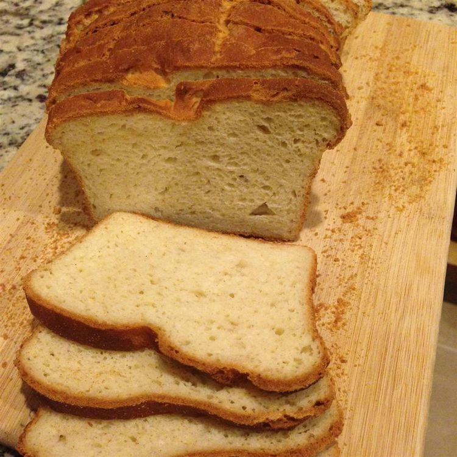

Odin Recipes
Home

Gluten Free Bread
Like most people with celiac disease, I find white bread is one of the foods our gluten-free family misses the most. After much trial and error in making gluten-free bread taste like real white bread, I created this wonderful gluten-free white bread recipe.
Steps
- 3 tablespoons white sugar
- 1 tablespoon active dry yeast
- 1 ¼ cups warm water (about 110 degrees F/43 degrees C)
- 1 ⅓ cups rice flour
- ½ cup potato starch
- ½ cup cornstarch
- ⅓ cup vegetable oil
- 3 eggs
- 1 tablespoon xanthan gum
- 1 ½ teaspoons salt